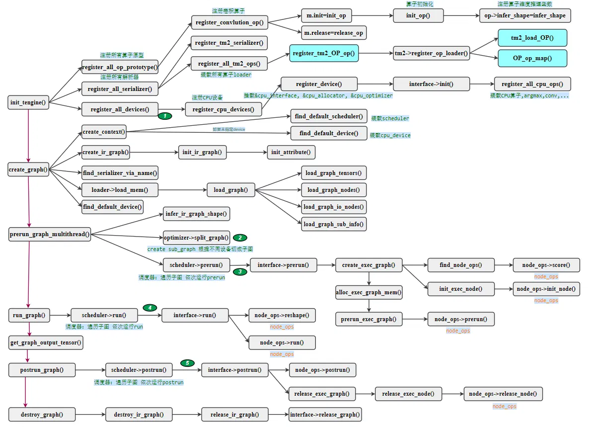
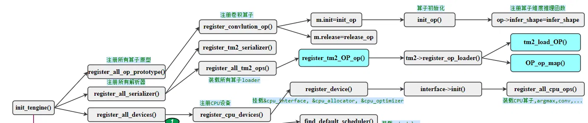
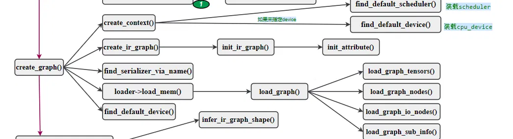

# 前言
本篇通过流程脑图和代码介绍 Tengine 推理引擎的推理流程。本篇是第一部分。Tengine 工程地址。
作为初学者，错误在所难免，还望不吝赐教。
# 介绍
Tengine 由 OPEN AI LAB 主导开发，该项目实现了深度学习神经网络模型在嵌入式设备上的快速、高效部署需求。为实现在众多 AIoT 应用中的跨平台部署，该项目使用 C 语言进行核心模块开发，针对嵌入式设备资源有限的特点进行了深度框架裁剪。同时采用了完全分离的前后端设计，有利于 CPU、GPU、NPU 等异构计算单元的快速移植和部署，降低评估、迁移成本。
# 推理流程
不了解 AI 推理引擎的人，可能难以理解推理引擎做了哪些工作。所以我画了一张流程图，该流程图介绍了 Tengine 推理引擎在推理神经网络的时候做了哪些事情。通过这张图，不仅能全局掌握 Tengine 的推理流程，还能对推理引擎有更深刻的认识。
直接上图：

图中是一大批函数名字和他们之间的链接关系。我们先从左边入手，左边红色连线分别是 init_tengine() 、 Create_graph() 、 prerun_graph_multithread() 、 run_graph() 、 get_graph_output_tensor() 、 postrun_graoh() 和 destroy_graph() 。这些函数名通俗易懂，我们挨个来描述他们的详细功能。
# init_tengine()

顾名思义，该函数完成推理引擎的初始化。分为三个步骤：注册算子原型、注册序列化工具、注册设备。
# 1. 注册算子原型：register_all_op_prototype ()
该函数将在编译的过程中生成在 build 文件夹里。该函数将调用一百多个算子原型的注册函数。如下：
int register_all_op_prototype(){ | |
... | |
ret = register_argmax_op(); | |
ret = register_const_op(); | |
ret = register_convolution_op(); | |
ret = register_crop_op(); | |
ret = register_deconvolution_op(); | |
... | |
} |
以注册卷积算子为例， register_convolution_op() 函数注册了卷积算子对应的初始化函数 init_op 和释放函数 release_op 。
int register_convolution_op() | |
{ | |
ir_method_t m; | |
m.version = 1; | |
m.init = init_op; | |
m.release = release_op; | |
return register_op(OP_CONV, OP_CONV_NAME, &m); | |
} |
初始化函数 init_op 为卷积参数 conv_param 开辟空间（保存 kernel shape、pad 等信息），同时注册了维度推理函数 infer_shape （根据输入 tensor 和 kernel 维度推理输出 tensor 维度）。
# 2. 注册序列化工具：register_all_serializer ()
它调用了两个函数。
1. register_tm2_serializer() ，就是注册序列化 tmfile 模型文件的工具。该工具静态结构体 tm2_serializer 如下所示，可用来读取内存，加载模型等。
static struct tm2_serializer tm2_serializer = { | |
.base = { | |
.get_name = get_name, | |
.load_model = load_model, | |
.load_mem = load_mem, | |
.unload_graph = unload_graph, | |
.register_op_loader = register_op_loader, | |
.unregister_op_loader = unregister_op_loader, | |
.init = init_tm2_serializer, | |
.release = release_tm2_serializer, | |
}, | |
.loader_list = NULL, | |
}; |
2. register_all_tm2_ops() 函数用于注册所有算子的加载工具。不同的算子参数不同，数据不同，需要注册不同的加载函数。
int register_all_tm2_ops(){ | |
... | |
ret = register_tm2_concat_op(); | |
ret = register_tm2_conv_op(); | |
ret = register_tm2_crop_op(); | |
... | |
} |
以卷积算子为例， register_tm2_conv_op() 函数的内容是：调用前述静态结构体 tm2_serializer 的 register_op_loader() 函数，将卷积算子的加载函数 tm2_load_conv 注册进去，用于模型中卷积节点的加载。
# 3. 注册设备：register_all_devices ()
作为支持多平台设备的推理引擎，设备管理也必不可少。编译阶段需要指定目标设备，我们以 CPU 为例，该函数将调用 register_cpu_device() 来注册 CPU 设备。
cpu_device 是个静态结构体，其包含了接口 interface 、分配器 allocator 、优化器 optimizer 。
static struct cpu_device cpu_dev = { | |
.base = { | |
.name = CPU_DEVICE_NAME, | |
.interface = &cpu_interface, | |
.allocator = &cpu_allocator, | |
.optimizer = &cpu_optimizer, | |
.scheduler = NULL, | |
.privacy = NULL, | |
}, | |
.master_cpu = 0, | |
.cpu_model = 0, | |
}; |
着重看一下 CPU 设备的接口，接口 cpu_interface 也是一个静态结构体：
static struct interface cpu_interface = { | |
.init = init_cpu, | |
.pre_run = prerun, | |
.run = run, | |
.post_run = postrun, | |
.async_run = NULL, | |
.async_wait = NULL, | |
.release_graph = cpu_dev_release_exec_graph, | |
.release_device = release_cpu, | |
}; |
接口包含 CPU 设备初始化 init 、预运行 pre_run 、运行 run 、后运行 post_run 。
当前会调用 CPU 设备初始化 init ，其余的会在后续调用到。
CPU 设备初始化函数 init_cpu 会调用 register_all_cpu_ops() 函数，来注册所有 CPU 算子实现。
int register_all_cpu_ops(){ | |
... | |
ret = register_concat_ref_op(); | |
ret = register_conv_ref_op(); | |
ret = register_conv_dw_hcl_x86_op(); | |
ret = register_conv_hcl_x86_op(); | |
ret = register_crop_ref_op(); | |
... | |
} |
从这段代码中看到，卷积算子的推理方式注册了三个。这是因为即使同一个设备的同一个算子，也可能有不同的实现方法，有些推理方法速度更快，但是有限制条件。所以具体使用哪个方法，会在后续流程中介绍。
# Create_graph()

该函数完成模型图结构的创建过程。
# 1. 创建上下文：create_context ()
Context 是图执行的上下文，它会绑定调度器、设备等信息。这里不过多解释。
typedef struct context | |
{ | |
char* name; | |
struct scheduler* scheduler; //!< binding scheduler of this context | |
struct device* device; //!< binding device of this context | |
void* default_options; //<! default device options of this context | |
void* device_options; //<! device options of this context | |
} ir_context_t; |
# 2. 创建图：create_ir_graph ()
该函数主要创建一个新的图，并调用 init_ir_graph() 初始化一些信息，如图的节点数量、tensor 数量、输入输出等，做的事情相当有限。
# 3. 加载图结构：load_mem ()
通过 find_serializer_via_name() 函数找到前述的序列化工具 serializer ，调用其
运行序列化工具的 load_mem() 函数，解析 tmfile 文件。其中 load_graph 函数会依次调用加载 tensor load_graph_tensors() 、加载节点 load_graph_nodes() 、加载输入输出节点 load_graph_io_nodes() 、加载子图信息 load_graph_sub_info() 。
后半部分的流程介绍将在下一篇完成。
# 后记
本博客目前以及可预期的将来都不会支持评论功能。各位大侠如若有指教和问题，可以在我的 github 项目 或随便一个项目下提出 issue，或者知乎 私信，并指明哪一篇博客，我看到一定及时回复！